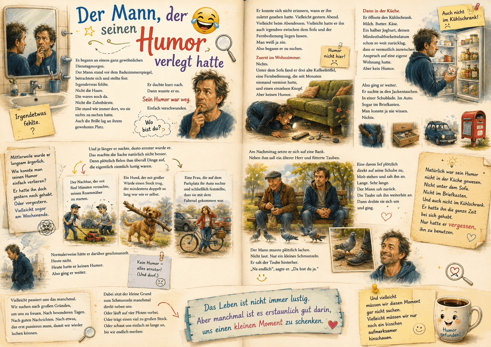

Free AI Website CreatorEine Gedankenreise zum Verschenken

Der Mann, der seinen Humor verlegt hatte
Es begann an einem ganz gewöhnlichen Dienstagmorgen.
Der Mann stand vor dem Badezimmerspiegel, betrachtete sich und stellte fest:
Irgendetwas fehlte.
Nicht die Haare.
Die waren noch da.
Nicht die Zahnbürste.
Die stand wie immer dort, wo sie nichts zu suchen hatte.
Auch die Brille lag an ihrem gewohnten Platz.
Er dachte kurz nach.
Dann wusste er es.
Sein Humor war weg.
Einfach verschwunden.
Er konnte sich nicht erinnern, wann er ihn zuletzt gesehen hatte.
Vielleicht gestern Abend.
Vielleicht beim Abendessen.
Vielleicht hatte er ihn auch irgendwo zwischen dem Sofa und der Fernbedienung liegen lassen.
Man weiß ja nie.
Also begann er zu suchen.
Zuerst im Wohnzimmer.
Nichts.
Unter dem Sofa fand er drei alte Kaffeelöffel, eine Fernbedienung,
die seit Monaten niemand vermisst hatte, und einen einzelnen Knopf.
Aber keinen Humor.
Dann in der Küche.
Er öffnete den Kühlschrank.
Milch.
Butter.
Käse.
Ein halber Joghurt, dessen Mindesthaltbarkeitsdatum schon so weit zurücklag,
dass er vermutlich inzwischen Anspruch auf eine eigene Wohnung hatte.
Aber kein Humor.
Also ging er weiter.
Er suchte in den Jackentaschen.
In einer Schublade.
Im Auto.
Sogar im Briefkasten.
Man konnte ja nie wissen.
Nichts.
Mittlerweile wurde er langsam ärgerlich.
Wie konnte man seinen Humor einfach verlieren?
Er hatte ihn doch gestern noch gehabt.
Oder vorgestern.
Vielleicht sogar am Wochenende.
Und je länger er suchte, desto ernster wurde er.
Das machte die Sache natürlich nicht besser.
Denn plötzlich fielen ihm überall Dinge auf, die eigentlich ziemlich lustig waren.
Der Nachbar, der seit fünf Minuten versuchte, seinen Rasenmäher zu starten.
Ein Hund, der mit großer Würde einen Stock trug, der mindestens doppelt so lang war wie er selbst.
Eine Frau, die auf dem Parkplatz ihr Auto suchte und schließlich feststellte,
dass sie mit dem Fahrrad gekommen war.
Normalerweise hätte er darüber geschmunzelt.
Heute nicht.
Heute hatte er keinen Humor.
Also ging er weiter.
Am Nachmittag setzte er sich auf eine Bank.
Neben ihm saß ein älterer Herr und fütterte Tauben.
Eine davon lief plötzlich direkt auf seine Schuhe zu, blieb stehen und sah ihn an.
Lange.
Sehr lange.
Der Mann sah zurück.
Die Taube sah ihn weiterhin an.
Dann drehte sie sich um und ging.
Der Mann musste plötzlich lachen.
Nicht laut.
Nur ein kleines Schmunzeln.
Er sah der Taube hinterher.
„Na endlich“, sagte er. „Da bist du ja.“
Natürlich war sein Humor nicht in der Küche gewesen.
Nicht unter dem Sofa.
Nicht im Briefkasten.
Und auch nicht im Kühlschrank.
Er hatte ihn die ganze Zeit bei sich gehabt.
Nur hatte er vergessen, ihn zu benutzen.
Vielleicht passiert uns das manchmal.
Wir suchen nach großen Gründen, um uns zu freuen.
Nach besonderen Tagen.
Nach guten Nachrichten.
Nach etwas, das erst passieren muss, damit wir wieder lachen können.
Dabei sitzt der kleine Grund zum Schmunzeln manchmal direkt neben uns.
Oder läuft auf vier Pfoten vorbei.
Oder trägt einen viel zu großen Stock.
Oder schaut uns einfach so lange an, bis wir endlich merken:
Das Leben ist nicht immer lustig.
Aber manchmal ist es erstaunlich gut darin, uns einen kleinen Moment zu schenken.
Und vielleicht müssen wir diesen Moment gar nicht suchen.
Vielleicht müssen wir nur noch ein bisschen aufmerksamer hinschauen.
Manchmal scheint uns etwas verloren gegangen zu sein.
Die Freude.
Die Leichtigkeit.
Das Lachen.
Dann beginnen wir zu suchen.
Wir warten vielleicht auf bessere Tage, besondere Ereignisse oder gute Nachrichten, die uns wieder ein Lächeln schenken.
Doch manchmal ist das, was wir suchen, gar nicht verschwunden.
Vielleicht haben wir nur vergessen, hinzuschauen.
Das Leben ist nicht immer leicht und es gibt Tage, an denen uns wirklich nicht nach Lachen zumute ist. Aber manchmal versteckt sich zwischen all dem Ernst des Alltags plötzlich ein kleiner Moment, der uns ein Schmunzeln schenkt.
Nicht, weil sich alle Probleme aufgelöst haben.
Sondern weil das Leben uns für einen kurzen Augenblick daran erinnert, dass es neben dem Ernst auch noch etwas anderes gibt.
Diese Geschichte entstand aus einer einfachen, aber schönen Frage:
Was wäre eigentlich, wenn wir unseren Humor verlieren könnten?
Nicht bildlich gesprochen.
Sondern wirklich.
Wo würde man anfangen zu suchen?
Im Wohnzimmer?
In der Küche?
Vielleicht sogar im Kühlschrank? 😄
Aus diesem Gedanken entstand die Geschichte eines Mannes, der seinen Humor offenbar verlegt hatte und ihn nun überall sucht.
Und vielleicht liegt gerade in dieser kleinen, humorvollen Vorstellung auch der eigentliche Gedanke der Geschichte:
Dass manches, was wir verloren zu haben glauben, vielleicht gar nicht verschwunden ist.
Vielleicht wartet es nur darauf, von uns wiederentdeckt zu werden.
Vielleicht musst Du nicht immer auf den großen Grund zum Glücklichsein warten.
Schau ruhig einmal nach den kleinen Dingen.
Nach dem unerwarteten Lächeln.
Dem absurden Moment.
Dem Menschen, der Dich zum Schmunzeln bringt.
Oder einfach nach einer kleinen Situation, die so seltsam ist, dass Du gar nicht anders kannst. 😄
Vielleicht ist Dein Humor ja gar nicht verloren gegangen.
Vielleicht sitzt er irgendwo neben Dir und wartet nur darauf, dass Du ihn wieder bemerkst.
Free AI Website Creator